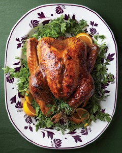

What is Turkey Bowling?
 Turkey Bowling is a Cincinnati Thanksgiving tradition and a grueling sports challenge. Similar to traditional bowling, the target of the game is to hurl a devastating mass towards a set of pins, knocking them over. The winner will be rewarded with eternal fame and fortune.What will we need?
You can pickup these supplies at any grocer or hardware store:- Frozen Turkey
- Duck Tape
- 10 - 5 Gallon Buckets
- Humans
- Cash
(optional)(preferred)(absolutely necessary for fun)
How should we prepare?
Preparation for Turkey Bowling is very easy. Liberally wrap your frozen turkey in duck tape. At least two layers are recommend as the turkey will take quite a bit of abuse. On one end of the turkey, create a handle using more duck tape.How do we play?
- Select a Turkey Bowling commissioner. The commissioner is responsible for keeping the game on track, and making any necessary judgement calls.
- The game will be round based, each player takes up to 2 throws per round.
- At the beginning of each players turn, setup the 9 buckets in a triangle formation the same as traditional bowling. Each player stands 20-30 feet from the buckets, and hurls the turkey ball.
- After each players first hurl, the buckets knocked over are removed and the player hulrs again. The commisioner records the total number of buckets knocked over.
- In the spirit of Darwin, the weakest player shall wither and the rest shall move on to the next round. The rounds repeat until the last man stands, basking in glory as the Turkey Bowling champion
How can we make it more interesting?
At the beginning of the game, each player buys in, and the commissioner holds the pot. Winner takes all!Optionally, the commissioner may allow players to buy back in if they are knocked out of any round except for the last.